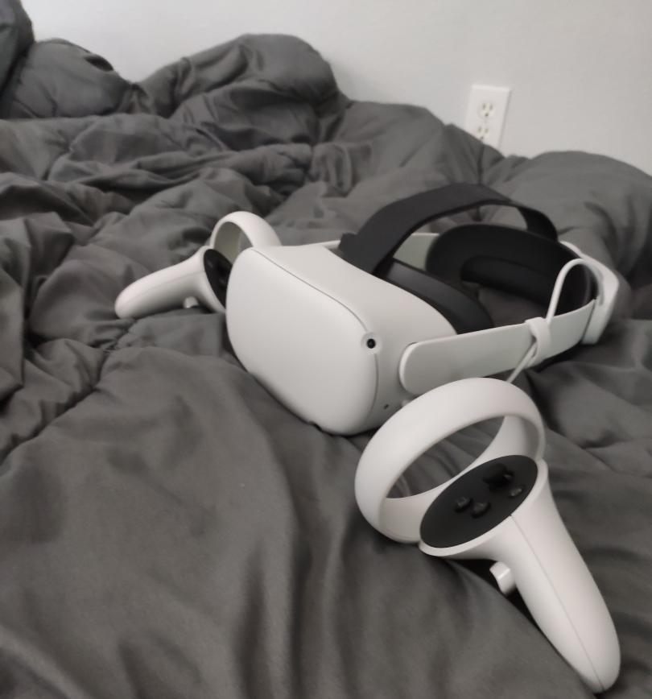

Getting Started With VR
While much of the development for VR can be done with a computer alone, generally users start by building a VR-ready computer. Recently, however, this has changed with the release of the Oculus Quest and now the Oculus Quest 2 which not only made VR accessible to those without a high end computer but also took down the cost of entry into VR to just $299 for a fully self-contained headset, no computer required.
Headsets
When it comes to picking out a VR headset, there are still relatively few options out there.
The Quest and Quest 2 are the only consumer all-in-one headsets, meaning that if your computer is not able to handle VR, these are your only options. The good thing about these headsets, though, is that they can also be used for PCVR by connecting to a gaming PC either over WIFI using Virtual Desktop or by a cable.
If you have a high end gaming PC capable of running VR, then you can choose from a number of different PCVR headsets out there from companies such as HTC, Oculus, Valve, and even HP and Lenovo.
| Headset | FOV | Resolution | Screen Type | Refresh Rate | Weight | Price |
|---|---|---|---|---|---|---|
| Oculus Quest 2 | 100° | 3664x1920 per eye | LCD | 90Hz | 503g | $299 |
| Valve Index | 130° | 1440x1600 per eye | LCD | 144Hz | 570g | $999 |
| HTC Vive Pro | 110° | 1440x1600 per eye | AMOLED | 90Hz | 563g | $799 |
| HP Reverb G2 | 114° | 2160x2160 per eye | LCD | 90Hz | 499g | $599 |
My Headset
As many of my friends already know, I've always had a soft spot for Oculus. While I, like many others, may be upset that they were acquired by Facebook, I still continue to enjoy their products.
My first ever headset was the Oculus Rift CV1. After that, I traded it in for an original Oculus Quest. Now I use the Oculus Quest 2 as my daily driver, and I have few complaints. While Oculus ditched the OLED display from the original Quest and the FOV is slightly lacking, the ridiculously high resolution and comfort with the elite strap make up for it.
